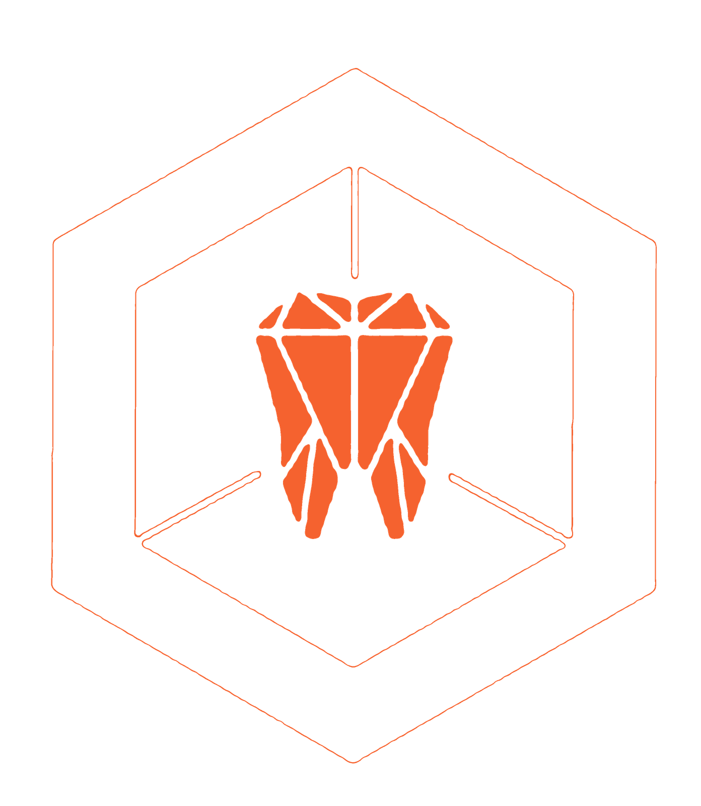

Дослідження ринку · Пакет 1 «Реклама» · листопад 2026
Реклама зуботехнічних лабораторій: хто на що тисне — і що з цього взяти
Meta і Google в Україні та світі: аргументи, перші рядки, пропозиції на вході, ціни, куди веде реклама. Підбірка найкращих прийомів і рекомендовані концепції для Kologrivov.
150
оголошень Meta з 6 країн
40
лабораторій, що рекламуються лікарям
53
рекламодавці перевірені в Google
73
пошукові запити по містах України

У документі
01
Ринок і аргументиканали, на що тиснуть, хуки, пропозиції на вході, ціни, куди веде реклама
02
Підбірка прийомівMeta — Україна і світ, Google — приклади та формати
03
Висновки і рекомендаціїробити і не робити, 5 концепцій, 6 креативів, схема реклами в Meta, каталог
Meta — де зараз усі конкуренти. Google — де лікаря зустрічають лише троє
66оголошень
показують лікарям в Україні 15 лабораторій через Facebook та Instagram. Найактивніша — FrankoLab: 23 оголошення, 18 з них активні зараз.
У Google лікарям по всій Україні рекламуються 3 лабораторії — Contour Lab, FrankoLab і Цифра. Вони використовують пошук, графічні банери, відео та рекламу в Картах.
Що це означає
У Meta треба вирізнятися серед 15 лабораторій — тут вирішують креатив і пропозиція. У Google лікар, який сам шукає лабораторію, бачить лише трьох рекламодавців — тут вирішує присутність і точний текст. Канали доповнюють один одного.
Оголошення лабораторій для лікарів, Україна
Meta
Усі лабораторії15 рекламодавців
66
FrankoLab18 активні
23
IDentity Labкурси для лікарів
12
Zirkondan.labціна в тексті
10
Google
Contour Lab№1 за «зуботехнічна лабораторія»
9
FrankoLabпошук, банери, відео
8
Цифра (Cifra Style)пошук і Карти
3
Найдовше в Meta крутиться оголошення FrankoLab про All-on-X — 305 днів, і воно досі активне. Рік ніхто не тримає рекламу, яка не приносить замовлень: це найкращий доступний сигнал, що вона окупається.
Джерела: Бібліотека реклами Meta — 150 оголошень, знято 2026-11-15 · Центр прозорості Google Ads — 53 рекламодавці, видача google.com.ua по 73 запитах у містах України, 2026-11-15. Бібліотеки не показують результатів реклами — тривалість показу є непрямим сигналом.
FrankoLab, Zirkondan, Aspect-lab, Цифра«Працюєте в концепціях ALL-ON-X?»
Цифри-докази
3 з 12
FrankoLab, Livsha, timofiev«35 000 конструкцій для лікарів із 13 країн»
Прайс за заявку
2 з 12
FrankoLab, Zirkondan«Залишайте заявку та отримайте актуальний прайс»
Умови для нових
2 з 12
Zirkondan, Favorit Dent«Перші три роботи скажуть більше, ніж реклама»
Навчання лікарів
1 з 12
IDentity LabКурси для стоматологів в Одесі
Персональний технік
0 з 12
ніхтоLivsha — «персональний менеджер», FrankoLab у Google — «один менеджер», але не технік.
Джерело: тексти 66 оголошень 12 лабораторій для лікарів, Бібліотека реклами Meta (Україна), знято 2026-11-15; для FrankoLab додатково Google Ads. Позначки — за текстом оголошення.
Наслідок — «коштує довіри пацієнта», «час у кріслі».
Вихід — прайс, перша робота, вебінар.
Чого не видно в жодному хуку
Хто саме робитиме роботу. Жодна лабораторія не починає з техніка, який веде лікаря.
Джерело: перші рядки 114 оголошень для лікарів, Бібліотека реклами Meta, знято 2026-11-15; відсортовано за тривалістю показу. Іноземні — переклад MESHKOR.
Хто показує ціну в рекламі — і хто свідомо її ховає
1500 грн
Циркон, за одиницюZirkondan · UA · для нових партнерів, до кінця листопада
від 1700 грн
Циркон преміальний, за одиницюLivsha · UA · постійна ціна в оголошенні
150 €
Фрезерування титанової балкиZirkondan · UA · за STL-файлом, менш ніж за добу
140 €
Титанова балка All-in-4Aspect-lab · UA · All-in-5 і більше — від 160 €
від 159 €
Коронка з цирконіюDandy · DE · 6 днів, гарантія 10 років
20 000 zł
Інтраоральний сканерScanlab · PL · + ваучер 7 000 zł на роботи лабораторії
Що видно
Ціну в оголошенні показують ті, хто конкурує ціною або продає вузьку послугу (фрезерування, балки). Найбільший рекламодавець України — FrankoLab — ціни не показує: він дає прайс за заявку.
Рекомендація для Kologrivov
Частина лікарів уже вважає прайс Kologrivov високим (опитування). Виходити з ціною в рекламу — програвати Zirkondan і Livsha на їхньому полі. Сильніше: прайс після заявки разом з умовами першої роботи і поясненням, за що лікар платить — техніком, дизайном, контролем.
Джерела: тексти оголошень, Бібліотека реклами Meta, знято 2026-11-15; ціни — як вказано в оголошеннях на дату зйомки. Опитування лікарів — бриф Kologrivov.
У месенджер або Instagram«напишіть у Direct», «надіслати повідомлення»
30
На сайтсторінка послуг або прайсу
18
Не вказанобез кнопки або посилання
18
Месенджер — найкоротший шлях, але лікар пише «скільки коштує?» і чекає відповіді. Хто відповідає повільно або без умов — втрачає. Сайт без сторінки для лікарів нічого не додає.
Рекомендований шлях для Kologrivov
1Оголошенняхук для конкретного лікаря
2Лід-форма Metaім'я, клініка, телефон, тип робіт; питання «Ви лікар чи клініка?»
3Дзвінок технікапротягом години, не менеджера
4Прайс + умови першої роботиписьмово, з термінами
5Перша робота → закріплений техніклікар знає, хто веде його роботи
Джерело: колонка «посадочна» 66 оголошень лабораторій України для лікарів, Бібліотека реклами Meta, знято 2026-11-15. Шлях 1–5 — рекомендація MESHKOR.
Джерело: Бібліотека реклами Meta, знято 2026-11-15. Тривалість — від старту до сьогодні або до кінця показу. Цитати іноземних оголошень — переклад MESHKOR. Усі оголошення з відео та фото — у каталозі.
Найдовше живуть оголошення, які звертаються до конкретного лікаря і називають його біль: переробки, терміни, All-on-X.
Ціну прямо в оголошенні показують 4 лабораторії з 12, умови для нових — 2.
30 з 66 оголошень ведуть у месенджер або Instagram, лише 18 — на сайт.
Джерело: Бібліотека реклами Meta, знято 2026-11-15. Тривалість — від старту до сьогодні або до кінця показу. Цитати іноземних оголошень — переклад MESHKOR. Усі оголошення з відео та фото — у каталозі.
Джерело: Бібліотека реклами Meta, знято 2026-11-15. Тривалість — від старту до сьогодні або до кінця показу. Цитати іноземних оголошень — переклад MESHKOR. Усі оголошення з відео та фото — у каталозі.
Джерело: Бібліотека реклами Meta, знято 2026-11-15. Тривалість — від старту до сьогодні або до кінця показу. Цитати іноземних оголошень — переклад MESHKOR. Усі оголошення з відео та фото — у каталозі.
Джерело: Центр прозорості Google Ads та видача google.com.ua (uk), знято 2026-11-15; тексти переписано зі знімків оголошень. Кількість — оголошень у Центрі прозорості на дату зйомки.
ПошукОголошення у видачі, коли лікар сам шукає лабораторію або послугу
Окремі групи під тип робіт (тотал на імплантах, вініри, фрезерування за STL); «тільки для лікарів і клінік» у заголовку; мінус-слова пацієнтських запитів
Змішувати запити лікарів і пацієнтів; українська й російська в одному оголошенні
Contour Lab, FrankoLab, Цифра
Performance MaxОдна кампанія на пошук, YouTube, Карти, Gmail і сайти-партнери; Google сам шукає аудиторію
Якісні фото робіт і відео процесу; сигнали аудиторії (відвідувачі сайту, база лікарів); налаштовані конверсії — заявка і дзвінок
Запускати без конверсій: система піде туди, де дешевше, — до пацієнтів
не виявлено
Google Карти і профіль компаніїЛабораторія на карті за запитом «зуботехнічна лабораторія» поруч
Повний профіль: категорія, фото лабораторії й робіт, години, відгуки лікарів; реклама в Картах
Профіль без відгуків і фото
Цифра — реклама в Картах; в Одесі в Картах вгорі iDentity (5,0, 88 відгуків) і CreaLAB (4,1, 81)
YouTube і Demand GenВідео в YouTube і стрічках Google
Ті самі відео 20–40 с, що для Meta: процес, тотал з лікарем, техніки
Рекламні ролики без роботи в кадрі
FrankoLab — відео з Ivoclar
РемаркетингПовторний показ лікарям, які були на сайті
Окремі оголошення «повернутися»: кейс + умови першої роботи
Показувати те саме оголошення, яке лікар уже бачив
не виявлено
Джерела: Центр прозорості Google Ads (формати оголошень конкурентів), Google Карти, знято 2026-11-15. Колонки «Робити / Не робити» — рекомендації MESHKOR.
Робити і не робити: що показала реклама конкурентів
Робити
Звертатися до конкретного лікаря«Працюєте в концепціях ALL-ON-X?» (FrankoLab, 305 днів) · «Тільки для клінік і лікарів» (FrankoLab, Google)
Називати біль словами лікаряпереробки, корекції, терміни, «важко зв'язатися» — FrankoLab, Scanlab, Zirkondan, For Dental
Давати один доказ цифрою«35 000 конструкцій, 13 країн», «200 стоматологів», «40 техніків», «перевіряємо кожну роботу під мікроскопом»
Знижувати ризик першої роботи«Почніть з однієї роботи» (FrankoLab), «перші три роботи» (Zirkondan), −10% (Löger & Grothe), $100 кредиту (Smile Dental)
Показувати умови до дзвінкаціна + термін + гарантія: «коронка від 159 €, 6 днів, 10 років гарантії» (Dandy)
Давати користь до продажувебінар «Який сканер обрати» (Stroh, 322 дні), курси для лікарів (IDentity), «приймаємо STL з будь-якого сканера»
Не робити
Загальні слова без доказу«гарантуємо якість, точність і відповідальний підхід», «працюємо для Вас» — у вибірці такі оголошення крутились 3 і 10 днів
Лише «напишіть у Direct»лікар не бачить умов і цін до розмови; в Україні 30 з 66 оголошень ведуть у месенджер або Instagram, на сайт — лише 18
«Контроль» без процедурислово «контроль» пишуть троє, а що саме перевіряють — лише Contour Lab («під мікроскопом»)
Змішувати адресатівлікарі, техніки й пацієнти в одному оголошенні або суміш мов — розмиває, кому це
Корисно знати
Тривалість показу — найкращий доступний сигнал: бібліотеки не показують заявок і витрат.
63 зі 114 оголошень для лікарів — відео; половина — до 30 секунд, 51 з 63 — не довші за 40 секунд.
FrankoLab тримає 23 варіації одночасно — так перевіряють, який текст працює краще.
Кожне оголошення з цього документа можна відкрити в каталозі — з відео, фото й оцінкою.
Джерела: Бібліотека реклами Meta (150 оголошень), Центр прозорості Google Ads, знято 2026-11-15. Висновки — спостереження за текстами й тривалістю показу.
П'ять рекламних концепцій для Kologrivov — з того, що працює в інших
1
Один технік — на всі ваші роботи
«Ваші роботи веде один технік. Він знає ваші вимоги і відповідає за результат від скану до фінальної перевірки.»
На чому базується: Вільна позиція: 0 з 12 лабораторій; №1 бажання лікарів в опитуванні
Візуал: Портрет техніка за робочим місцем з роботою в руках, ім’я і спеціалізація
Формат: Статика 4:5 + відео 20–30 с «знайомтесь, ваш технік»
Умова: Спершу закріпити техніка за кожним лікарем і запровадити фінальну перевірку
2
Тотал на імплантах: дизайн погоджуєте до фрезерування
«Цифровий дизайн усмішки — до початку лікування. Ви погоджуєте, ми фрезеруємо.»
На чому базується: All-on-X — найдовші оголошення: FrankoLab 305 днів, Löger & Grothe 134
Візуал: Екран з цифровим дизайном поруч з готовим тоталом на моделі
Формат: Карусель «дизайн → модель → робота» + відео процесу
Умова: —
3
Перша робота — щоб переконатися
«Надішліть одну роботу. Умови для нових лікарів — у відповідь на заявку.»
На чому базується: «Перші три роботи» (Zirkondan), «Почніть з однієї роботи» (FrankoLab)
Візуал: Одна робота крупно на темному тлі, мінімум тексту
Формат: Статика 4:5 і 9:16 для сторіс, лід-форма
Умова: Визначити умови першої роботи
4
GC Competence Lab в Одесі
«Сертифікована лабораторія GC Competence Lab. Засновник — Opinion Leader GC.»
На чому базується: Міжнародний статус у рекламі показує лише FrankoLab (Ivoclar, 15 оголошень); GC не згадує ніхто з 12
Візуал: Робота з матеріалів GC + справжній сертифікат лабораторії
Формат: Статика 4:5, банер для Google
Умова: —
5
Навчання від Opinion Leader GC
«Воркшоп для ортопедів: естетика тоталу на імплантах.»
На чому базується: Вебінар Stroh — 322 дні; курси IDentity — 12 оголошень
Візуал: Засновник з лікарями за робочим столом, дата і тема
Формат: Статика 4:5 + реєстрація через лід-форму
Умова: Провести хоча б один воркшоп
Концепції — рекомендація MESHKOR на основі підбірки (стор. 9–14) і опитування лікарів із брифу Kologrivov. Тексти — чернетки; промпти для статичних креативів — окремим файлом. «Умова» — що має бути правдою в лабораторії до показу оголошення.
Як виділитися в стрічці лікаря: 6 креативів однієї серії
Темне тло + один оранжевий акцентТі самі кольори, що в знаку Kologrivov: графіт, білий, оранжевий. Колір працює як підпис ще до того, як прочитано логотип.
Один предмет, дуже близькоНе стіл техніка і не «команда», а одна робота в макро. Лікар оцінює роботу очима.
Заголовок ≤ 5 слів мовою лікаряСкан, рефрактор, абатмент, тотал — слова, які пацієнт пропустить, а лікар зупиниться.
Одна сітка на всю серіюЛоготип, рубрика, заголовок, строка для фахівця, призив — завжди на тих самих місцях. Після 2–3 показів серію впізнають.
01
Цифра → ремесло
«Від вашого скану — до кераміки.»
Половина коронки — сітка скану, половина — готова кераміка. Лікар бачить свій файл і результат в одному предметі.
Чим чіпляє за 1 секунду: Сітка скану — те, що лікар щодня бачить у своїй програмі. Він впізнає її, ще не прочитавши текст.
Інші заголовки для цього кадру
Ваш STL — наша кераміка.
Цифра на вході. Ручна робота на виході.
Надішліть скан — отримайте кераміку.
02
Імплантологія
«Тотал на імплантах.»
Тотал усередині ізометричного куба — того самого, що в знаку Kologrivov. Кадр читається як бренд навіть без логотипа.
Чим чіпляє за 1 секунду: Найдорожча робота для ортопеда — і найдовші оголошення в ніші (FrankoLab — 305 днів). Тема, на яку лікар зупиняється сам.
Інші заголовки для цього кадру
Тотал, який ви погоджуєте до фрезерування.
All-on-X: від дизайну до балки.
Цифровий дизайн тоталу — до початку лікування.
Умова: Сформулювати разом з лабораторією: як саме лікар погоджує дизайн.
Одна робота у футлярі, як ювелірний виріб; на латунній табличці — «DR. ____», місце для імені лікаря.
Чим чіпляє за 1 секунду: У рекламі «персонального техніка» не обіцяє жодна з 12 лабораторій України; в опитуванні лікарів це бажання №1.
Інші заголовки для цього кадру
Один технік на всі ваші роботи.
Технік, який знає ваші вимоги.
Не черга замовлень — ваш технік.
Умова: Технік справді закріплений за лікарем.
Креативи — пропозиція MESHKOR. Фони згенеровані нейромережею за промптами MESHKOR, текст і логотип накладені поверх. Повний розмір і відео — kologrivov.meshkor.io/reklama/creatives. «Умова» — що має бути правдою до показу.
Скан перетворюється на кераміку всередині фірмового куба; заголовок друкується по літерах; на 6-й секунді виїжджає кнопка «Надішліть перший скан».
Чим чіпляє за 1 секунду: Рух з першого кадру (лінія сканування) + текст, що з’являється синхронно з картинкою. Текст і кнопка — у безпечній зоні Reels.
Інші заголовки для цього кадру
Ваш скан. Наша кераміка. 10 секунд.
Як STL стає коронкою.
Надішліть перший скан.
Як запускати серію
3–4 креативи одночасноВ одній кампанії — кілька кадрів серії. Meta сама віддасть показ тому, на який лікарі реагують краще.
Формат під місце показуСтрічка — 4:5 (1080×1350). Reels і сторіс — 9:16 з текстом у безпечній зоні.
Оновлювати кожні 2–4 тижніТа сама сітка, новий предмет або новий заголовок з переліку «інші заголовки».
Рахувати заявки по кожному кадруНе кліки, а заявки від лікарів і перші роботи — тоді видно, який заголовок «продає».
Креативи — пропозиція MESHKOR. Фони згенеровані нейромережею за промптами MESHKOR, текст і логотип накладені поверх. Повний розмір і відео — kologrivov.meshkor.io/reklama/creatives. «Умова» — що має бути правдою до показу.
Уся Україна — тотали й цифровий дизайн з доставкою
Фільтр у формі: «Ви лікар чи клініка?»
2Креатив
3–5 концепцій зі стор. 16
Відео 20–40 с + статика 4:5
Справжні роботи й техніки в кадрі
Оновлювати кожні 2–4 тижні
3Пропозиція
Прайс за заявку
Умови першої роботи
Закріплений технік
Без ціни в оголошенні
4Куди веде
Лід-форма Meta з питанням-фільтром
Або сторінка «Для лікарів» на сайті
Дзвінок техніка протягом години
5Повторний контакт
Тим, хто переглянув відео на 50%+
Кейси «до / після» з лікарем
Нагадування про умови першої роботи
Що вважати результатом
Не кліки і не охоплення, а заявка від лікаря і перша робота. Їх варто рахувати окремо з першого дня — інакше неможливо порівняти концепції між собою.
Схема — рекомендація MESHKOR; спирається на підбірку прийомів (стор. 4–14). Конкретні налаштування таргетингу залежать від доступних у Meta категорій на момент запуску.
Каталог: кожне оголошення — з відео, фото й оцінкою
Усі оголошення лабораторій для лікарів, які ми знайшли, зібрані в одному каталозі. Відео й фото відкриваються прямо на сторінці — не через Facebook, тому нічого не зникне, якщо конкурент зніме рекламу.
114 оголошень Meta від 40 лабораторій з 6 країн + 21 оголошення Google
Під кожним: скільки днів крутиться, активне чи зняте, на що тисне
Оцінка: «Взяти», «Взяти частково» або «Не брати» — і що саме
Фільтри: країна, формат, тривалість, оцінка, пошук по тексту
 UA · ФОТО
UA · ФОТО UA · ФОТО
UA · ФОТО UA · ВІДЕО
UA · ВІДЕО